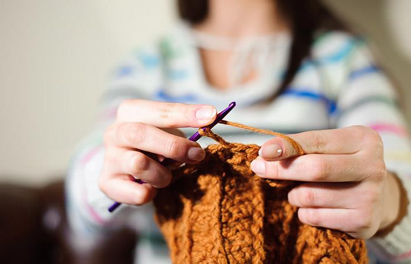

UN POCO SOBRE MI
Desde niña, me inquietó saber como se podían hacer tantas prendas bonitas con tan
sólo una aguja y un pedacito
de hilo
(Según mi madre, esta pasión la heredé de mi abuela).
Así que desde entonces no he dejado de crear distintas manualidades. A la vez el
tejer, siento que me motivó a
aprender y trabajar con distintas herramientas y técnicas, tales como la cestería, la marroquinería entre otras.
